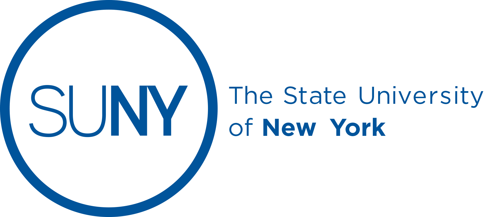

SUNY Robotics and Autonomy Workshop
Developing a roadmap for education, research and engagement in Robotics and Embodied Intelligence across New York State
August 7-8, 2025
Developing a roadmap for education, research and engagement in Robotics and Embodied Intelligence across New York State
Bringing together stakeholders to shape the future of robotics in New York State
The SUNY robotics and autonomy workshop plans to bring together stakeholders in robotics, autonomy and core engineering applications of embodied intelligence across the NY state. This includes researchers and educators from SUNY campuses, leaders from industry from NY state and beyond, officials from state and federal representatives with interest in embodied intelligence and robotics as well as K-12 educators in STEM education.
The purpose of this workshop is to develop a holistic roadmap for education, research and engagement in Robotics and Embodied Intelligence to meet the upcoming wave of robotics and autonomy that will affect all sectors of industry including manufacturing, defense/aerospace, agriculture, energy, healthcare, and others with an emphasis on these industries in NY state.
This roadmap, informed by the capabilities, opportunities, and needs of the various stakeholders across NY state, will serve three important purposes:
Inform SUNY as well as NYS broadly about future education, research and service programs to address the rapid growth in robotics and embodied intelligence.
Guide SUNY campuses on ways to jointly meet the upcoming needs for both current and future students, and industry personnel (about reskilling/upskilling).
Develop a shared platform across various campuses for continued interaction to inform government stakeholders and private funding sources.
The overall objective of such a roadmap is to develop infrastructure to continually inform government stakeholders as well as private funding sources of ways SUNY can meet the needs in robotics and autonomy as well as resources needed to accomplish this goal.
We seek your participation to inform us of your needs, provide feedback on the developing vision, and identify the gaps in our current research/education/partnerships, so that we can converge on a robust articulation of the opportunities and resource needs, at the intersection of the key organizations in SUNY.
Two days of collaboration, discussion, and planning
| Date | Time | Agenda | Notes |
|---|---|---|---|
| August 7, 2025 | 9:00 - 10:45 AM | Faculty research presentations | Quick talks by everyone to introduce their background |
| 11:00 - 11:45 AM | Breakout sessions - Research | Research-themed breakouts to assess capabilities, opportunities and needs | |
| 12:00 - 12:30 PM | Summarizing breakout | ||
| 12:30 - 1:30 PM | Lunch | ||
| 1:30 - 1:45 PM | Afternoon intros | ||
| 1:45 - 2:30 PM | Breakout session - Applications | Breakout based on applications, and their implications to robotics | |
| August 7, 2025 | 2:30 - 3:00 PM | Summarizing breakout | |
| August 7, 2025 | 3:00 - 3:30 PM | Coffee/break | |
| August 7, 2025 | 3:30 - 4:30 PM | Panel discussion - stakeholders | Have stakeholders in NYS discuss their views on robotics/autonomy applications |
| August 7, 2025 | 4:30 - 5:00 PM | Wrap-up | |
| August 8, 2025 | 9:00 - 9:15 AM | Welcome | |
| 9:15 - 10:00 AM | Short presentations by stakeholders | ||
| 10:00 - 10:45 AM | Breakout session - education/outreach | ||
| 11:00 - 11:30 AM | Summarizing breakout | ||
| 11:30 AM - 12:00 PM | Q&A/Discussion | ||
| 12:00 - 1:00 PM | Lunch | ||
| 1:00 - 2:00 PM | Discussion about report | ||
| August 8, 2025 | 2:00 - 2:30 PM | Concluding remarks |